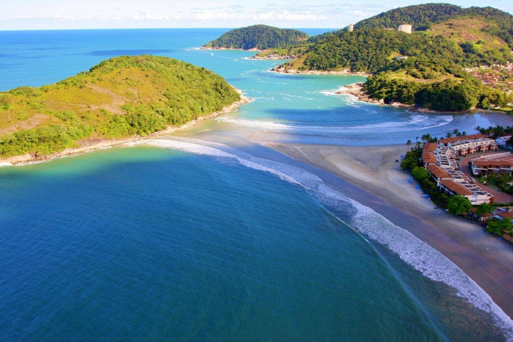

Está pronto para explorar novos horizontes e descobrir destinos incríveis? Nosso serviço de turismo oferece experiências únicas que vão além do comum. Com pacotes personalizados e guiados por especialistas locais, garantimos que cada viagem seja memorável e enriquecedora. Seja explorando monumentos históricos, mergulhando em culturas vibrantes ou apreciando paisagens de tirar o fôlego, estamos aqui para proporcionar a você a viagem dos seus sonhos. Junte-se a nós e transforme suas férias em aventuras inesquecíveis!
Quer passar um dia especial, explorando lugares fascinantes e criando memórias inesquecíveis? Nossos serviços de passeio são projetados para oferecer diversão e descoberta para toda a família. Desde tours urbanos detalhados até caminhadas serenas na natureza, nossos passeios são cuidadosamente planejados para garantir que você aproveite cada momento. Guias experientes, roteiros flexíveis e o conforto de saber que tudo está sendo cuidado são algumas das razões pelas quais nossos passeios são a escolha perfeita para seu próximo dia de lazer. Venha passear conosco e veja o mundo sob uma nova perspectiva!
Para os entusiastas da pesca, oferecemos a melhor experiência em pesca esportiva. Se você está em busca de adrenalina ao capturar grandes peixes ou simplesmente quer relaxar em um ambiente tranquilo e bonito, nossos serviços de pesca esportiva são perfeitos para você. Com equipamentos de alta qualidade, guias experientes e locais de pesca renomados, garantimos uma aventura emocionante e segura. Nossas expedições são adaptadas a todos os níveis de habilidade, garantindo que tanto iniciantes quanto pescadores experientes tenham uma experiência gratificante. Junte-se a nós e sinta a emoção da pesca esportiva como nunca antes!
A Praia do Tombo, localizada no Guarujá, é conhecida por suas ondas fortes e beleza natural. Este ponto turístico atrai surfistas de todo o país devido às condições ideais para a prática do esporte, sendo uma das poucas praias brasileiras a possuir a Bandeira Azul, certificação internacional de qualidade ambiental. Além do surfe, a praia oferece uma atmosfera tranquila e opções de lazer, como quiosques e áreas para caminhadas. É um destino perfeito para quem busca aventura e contato com a natureza.
Mar Casado, localizado na Praia de Pernambuco, no Guarujá, é um ponto turístico encantador. A região é famosa por sua formação natural única, onde o mar se encontra com a água de um canal, criando um espetáculo visual impressionante. É um destino popular para quem busca tranquilidade e beleza cênica. Além disso, oferece excelentes opções de lazer e infraestrutura, sendo ideal para famílias e turistas em busca de um ambiente sereno e bem estruturado.
Ponta das Galhetas, no Guarujá, separa a Praia das Astúrias da Praia do Tombo. Esta região é valorizada por seus condomínios de luxo, atraindo a classe alta com suas vistas panorâmicas e infraestrutura completa. A Praia das Astúrias oferece águas calmas, enquanto a Praia do Tombo é popular entre surfistas. A área é sinônimo de exclusividade e alta qualidade de vida.